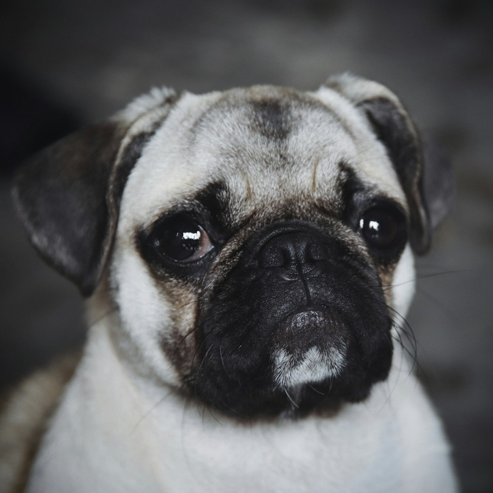
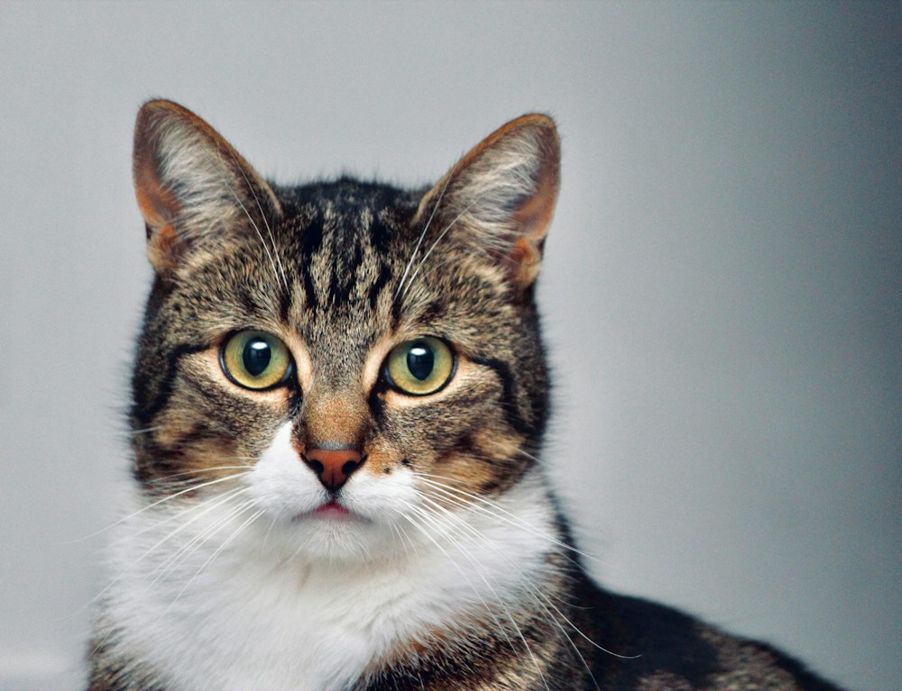

Banho
Para voltar limpinho, cheiroso e pronto para mais um abraço.
Preço sob consultaInforme porte e tipo de pelagem.
Quero um banho Do banho gostoso ao cuidado com a saúde, dê ao seu melhor amigo a atenção que ele merece. Tudo pertinho de você, na Estrada do Coco.
★★★★★ Carinho que os tutores reconhecem.Veja as 3 avaliações compartilhadas por tutores.Escolha o cuidado e converse com a equipe.
O orçamento é combinado antes do agendamento.
Para voltar limpinho, cheiroso e pronto para mais um abraço.
Um cuidado que faz diferença no conforto e na rotina do seu pet.
Uma conversa sobre a saúde do seu companheiro começa por aqui.
Traga suas dúvidas e a carteirinha para conversar sobre a vacinação.
Vai se ausentar? Consulte a equipe sobre opções para o seu pet.
Os valores ainda não estão publicados. Peça o orçamento do cuidado desejado pelo WhatsApp.
Escolha o serviço e abra uma conversa com a mensagem pronta. A equipe confirma o valor e o melhor horário com você.
O clique inicia a conversa. A reserva só é concluída após a confirmação da equipe.
Para você,
é família.
Para nós,
também merece
todo cuidado.
Na correria do dia a dia, ter um lugar por perto para cuidar do seu companheiro faz diferença. O Dr. Snoopy Pet Shop fica em Catu de Abrantes, na Estrada do Coco.
Conte sobre a rotina, as preferências e os cuidados especiais do seu pet. Essas informações ajudam a equipe a conversar com você sobre o serviço mais adequado.
Nome do médico-veterinário responsável e CRMV-BA: informações a confirmar com o estabelecimento.
Consultar dados profissionaisTrês avaliações do Google, conforme as capturas enviadas para esta página.
“Equipe muito atenciosa, meus petz amam ir para o banho.”Ver avaliação enviadaFoto de pet ilustrativa.

★★★★★“Excelente .. Meu pet é sempre tratado muito bem e vem muito limpinho do banho !”Ver avaliação enviadaFoto de pet ilustrativa.

★★★★★“Além da localização, o mais importante: a atenção com os pets, sempre com um olhar mais apurado.”Ver avaliação enviadaFoto de pet ilustrativa.
Não temos plantão nem emergência 24h. Em uma urgência fora do nosso horário, procure um serviço veterinário de emergência com funcionamento confirmado.
Não encontrou o que precisa?
A conversa continua no WhatsApp.
Para solicitar um horário, clique no botão de banho ou de banho e tosa desta página. O WhatsApp abre com uma mensagem pronta. Envie o nome do pet, porte e dia de preferência. A equipe confirma a disponibilidade, o orçamento e o agendamento durante o horário de atendimento.
Os preços de banho, tosa, consulta veterinária, vacinas e eventual hotel ou creche são informados diretamente pela equipe. Ainda não há uma tabela publicada nesta página. Solicite um orçamento pelo WhatsApp e informe o serviço desejado, o porte e o tipo de pelagem do seu pet.
O Dr. Snoopy Pet Shop fica na Rodovia BA-099, Estrada do Coco, KM 08, em Catu de Abrantes, Camaçari, Bahia, CEP 42825-901. O atendimento é de segunda a sexta, das 08h às 17h, e aos sábados, das 08h às 15h. Em feriados, confirme o funcionamento pelo WhatsApp.
Não. O Dr. Snoopy Pet Shop de Abrantes não oferece plantão ou atendimento de emergência 24 horas. O contato funciona no horário informado nesta página. Se o seu pet precisar de atendimento urgente fora desse período, procure um serviço veterinário de emergência e confirme se está atendendo.
Consulte a equipe pelo WhatsApp para saber os horários, os valores e a disponibilidade de atendimento veterinário e vacinas. Ao entrar em contato, informe o motivo da visita e se o pet possui carteirinha de vacinação. Os dados do profissional responsável e seu CRMV-BA também devem ser confirmados.
A oferta de hotel ou creche precisa ser confirmada diretamente com o Dr. Snoopy antes de planejar a estadia. Informe as datas, o porte e as necessidades do seu pet pelo WhatsApp. Peça detalhes sobre disponibilidade, condições de permanência e preço; esta página não confirma vagas nem reservas.
Nome e localização. O Dr. Snoopy Pet Shop - Abrantes é um pet shop em Catu de Abrantes, Camaçari, Bahia. O endereço é Rodovia BA-099, Estrada do Coco, KM 08, CEP 42825-901.
Horário e contato. O atendimento ocorre de segunda a sexta-feira, das 08h às 17h, e aos sábados, das 08h às 15h. O WhatsApp é (71) 98553-9111. Não há plantão 24 horas.
Serviços e preços. Consulte banho, tosa, atendimento veterinário e vacinas. A agenda veterinária e a oferta de hotel ou creche devem ser confirmadas diretamente com a equipe. Os preços não foram publicados; solicite um orçamento pelo WhatsApp.
Dr. Snoopy Pet Shop · Catu de Abrantes, Camaçari